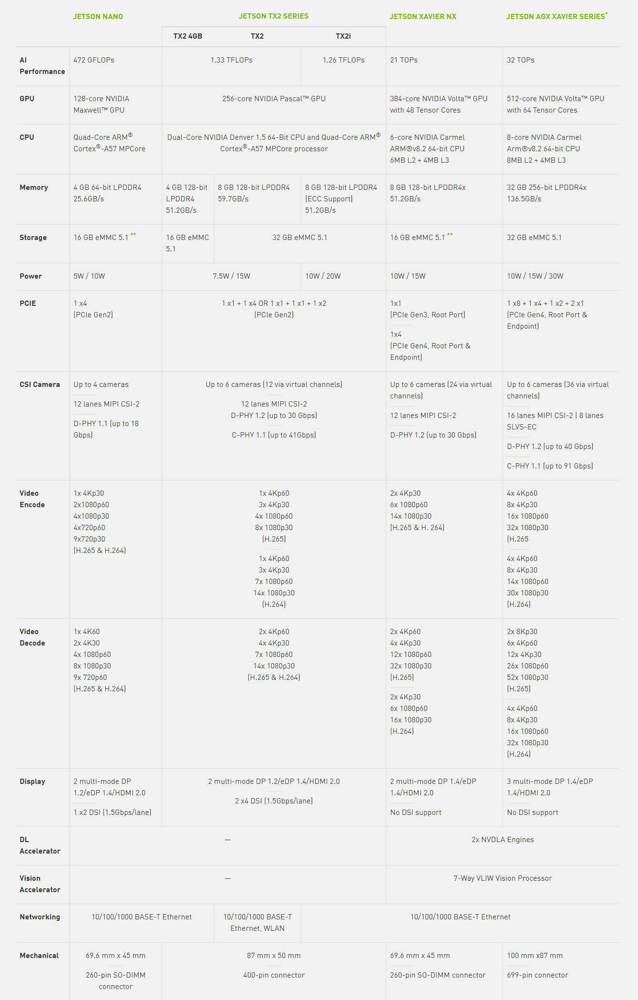
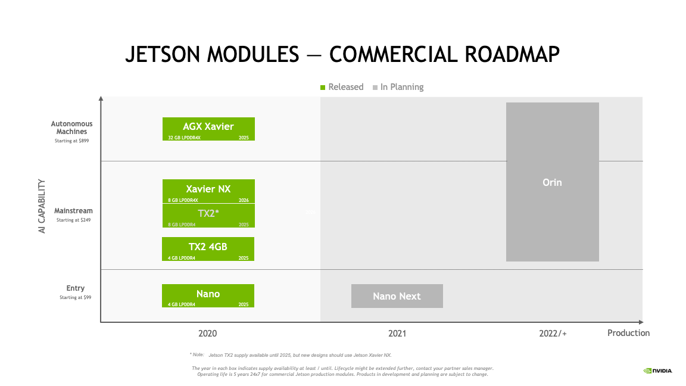
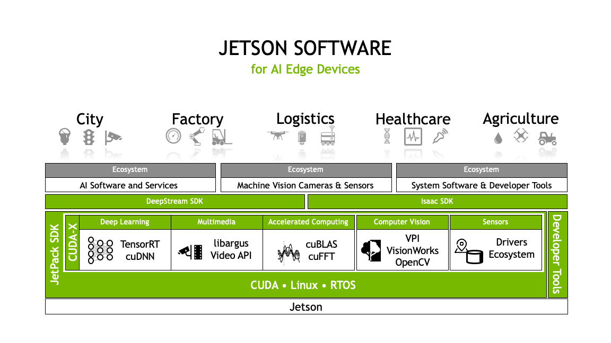

Nvidia Jetson¶
What is Jetson?¶
Nvidia Jetson 是先进的AI边缘设备平台，面向移动嵌入式系统市场中的GPU加速并行处理。 在深度学习和计算机视觉方面高性能，低能耗计算，使得Jetson成为计算密集型嵌入式项目的理想平台。
Jetson 系列对比¶
目前Jetson产品线有四个系列的产品(TK1和TX1已经停产)，包括Jetson Nano, Jetson TX2, Xavier NX, AGX Xavier。
四个产品的定位是不同的。Jetson Nano比较适合和体量较小的设备，定位入门级，售价99美元； Jetson TX2比Jetson Nano支持的摄像头数量更多，而且有专门的安全核心，售价249美元起； Xavier NX的尺寸最小，但性能却是Jetson Nano的50倍，并且Xavier NX可以与Jetson Nano的主板兼容，价格399美元； AGX Xavier是一个全功能平台，用户可通过AGX Xavier打造机器人，比如送货机器人，AGX Xavier可以实现自主驾驶。
Hardware Roadmap¶
Jetson Software¶
Nvidia Jetson 设备都由同一个Nvidia软件堆栈支持，使得一次开发可以部署到任意设备。 JetPack SDK 是开发AI应用程序最完善的解决方案。它含最新的基于linux操作系统的驱动包(L4T)，CUDA-X加速库以及用于AI边缘 应用开发的APIs。同时包括用于主机和开发套件的示例和文档及开发工具，并支持更高级别 的SDK，如用于流视频分析的DeepStream和用于机器人的Isaac。
Key Features in JetPack¶
OS
Nvidia L4T provides the bootloader, Linux kernel, necessary firmwares, NVIDIA drivers, sample filesystem, and more.
TensorRT
Nvidia TensorRT 是建立在CUDA之上，用于高性能深度学习推理的SDK。此SDK 包含深度学习推理优化器和运行时环境，可为深度学习推理应用提供低延迟和高吞吐量。
cuDNN
NVIDIA cuDNN是用于深度神经网络的GPU加速库。它强调性能、易用性和低内存开销。NVIDIA cuDNN可以集成到更高级别的机器学习框架中，如加州大学伯克利分校的流行CAFFE软件。简单的，插入式设计可以让开发人员专注于设计和实现神经网络模型，而不是调整性能，同时还可以在GPU上实现高性能现代并行计算。
CUDA
CUDA是一种由Nvidia推出的通用并行计算架构，为C和C++开发人员构建GPU加速的应用程序提供了全面的开发环境。该工具包包括用于NVIDIA GPU的编译器，数学库以及用于调试和优化应用程序性能的工具。
Multimedia API
提供的级别的API用于灵活的应用开发，如Camera application API，Sensor driver API。
Computer Vision
包括用于CV和图像处理的软件开发包VisionWorks，Opencv，VPI(Version Programing Interface)。
Developer Tools
The toolkit includes Nsight Eclipse Edition, debugging and profiling tools including Nsight Compute, and a toolchain for cross-compiling applications。